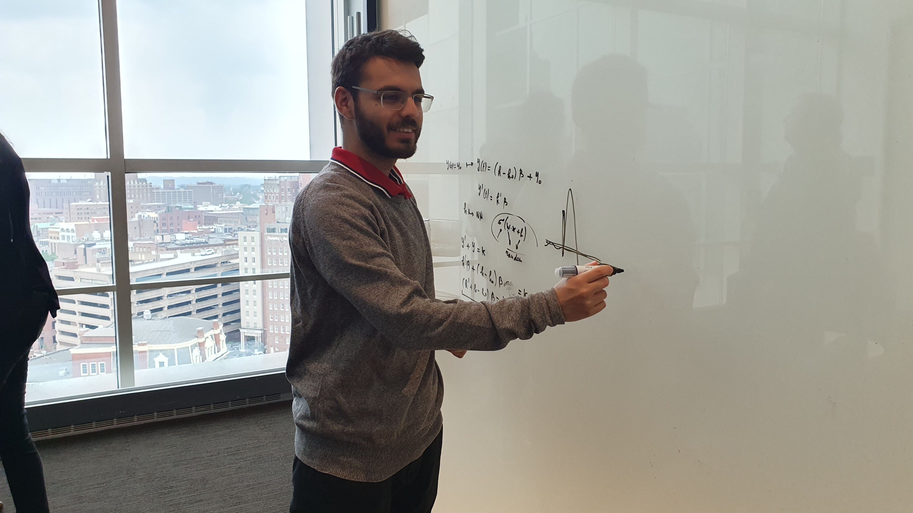
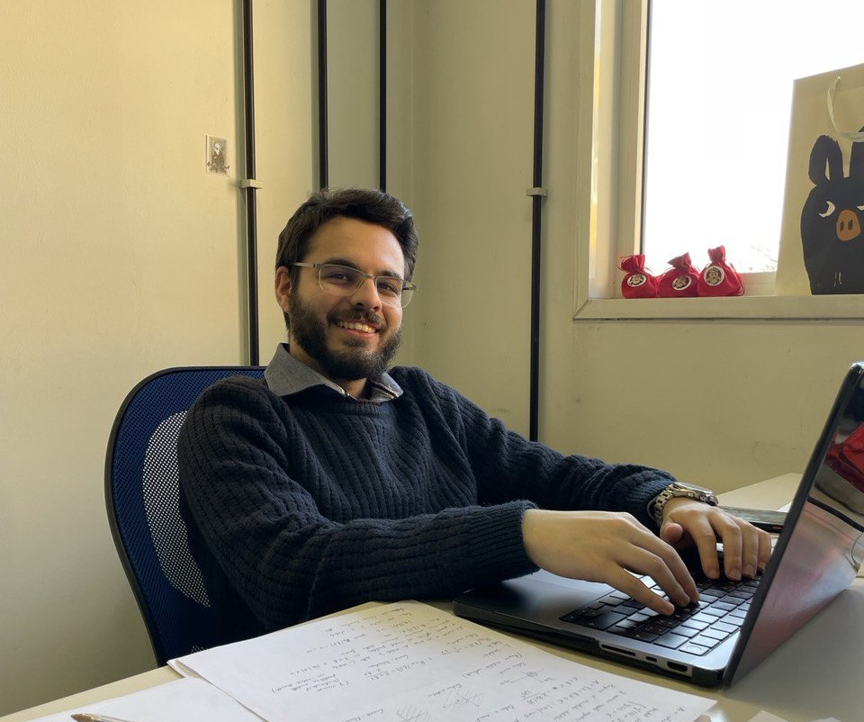

Programming languages: Fortran, C (libraries: PETSc), C++, Python (libraries: FEniCS, FEniCSx, Firedrake; modules: sympy, numpy, scipy, Qiskit, TensorFlow, PyTorch, JAX), MATLAB, Julia, Bash, LaTeX, VHDL.
Operating systems: Linux, Windows, macOS.
LLM: Leveraging Claude, Claude Code, Gemini, and ChatGPT to automate and optimize workflows.
Other skills: Parallel computing (MPI), GPU (CUDA), HPC on clusters, Arduino, HTML and basic web design, basic knowledge of FPGA and electronic devices.

